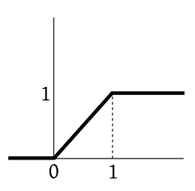
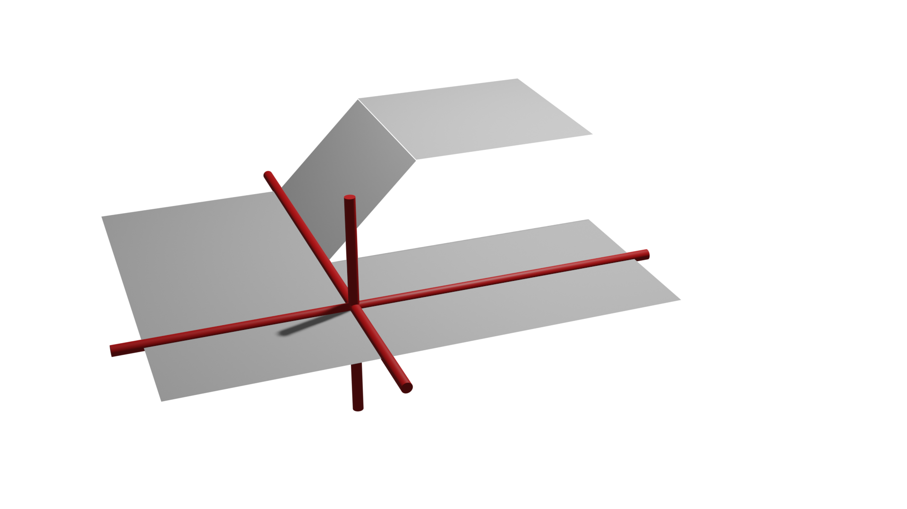

If we want to combine values of different random variables (e.g.,
by addition, subtraction etc or comparison like $\leq$), then
they must be jointly distributed. If we have $n$ jointly
distributed real-valued random variables, then you may consider
them as components of an ${\mathbb R}^n$-valued random
variable. Sometimes we call such a random variable a multivariate
random variable, as opposed to a univariate one.
We shall now extend the various familiar concepts about ${\mathbb R}$-valued random
variables to ${\mathbb R}^n$-valued random variables.
The extension of the concept of discreteness is straightforward.
The definition of continuous random variable is slightly more
confusing. For ${\mathbb R}$-valued random variables we had two
equivalent definitions:
ever singleton set has probability zero,
CDF is continuous.
For an ${\mathbb R}^n$-valued random variable, these two conditions
are not equivalent (the latter is stronger). We use the stronger
condition as the defintion of continuity of
an ${\mathbb R}^n$-valued random variable.
Caution: Most books take a much stronger definition of
continuity for joint distribution. More precisely, that
definition should be called absolute continuity, which we
shall learn later.
The following example shows that the first condition is indeed
weaker than the second.
EXAMPLE 1:
Consider the function with the following graph:

Clearly it satisfies the 4 conditions of being a CDF. Hence we
know that there is a random variable $X$ with this CDF (by
the fundamental theorem).
Define a ${\mathbb R}^2$-valued random variable
as $Y=(X,1).$ Show that for any $(a,b)\in{\mathbb R}^2$ we have $P(Y=(a,b))=0.$
Also show that the CDF of $Y$ is not continuous.
SOLUTION:
$P(Y=(a,b))= P(X=a~\&~1=b)\leq P(X=a)=0,$ since $X$ is
a continuous random variable.
Also, the joint CDF is
$$
F(a,b) = P(X\leq a~\&~1\leq b) = \left\{\begin{array}{ll}0&\text{if }b <
1\\F(a)&\text{if }b\geq 1.\\\end{array}\right.
$$
Its plot as a surface looks like this:

Notice the discontinuity
We can see that it is discontinuous because if you imagine the surface as a handkerchief, then clearly there is a slit halfway
through.
More mathematically, we can take a sequence $( (a_n, b_n) )\rightarrow (a,b)$ and show that $F(a_n,b_n)\not\rightarrow F(a,b)$.
We just have to place $(a,b)$ on the slit, and make the sequence approach it from a suitable direction.
If we take $(a_n,b_n) =\left( \frac 12, 1-\frac 1n\right),$
then $(a_n,b_n)\rightarrow \left(\frac 12,1\right).$
Now $F(a_n,b_n)\equiv 0,$ and so $F(a_n,b_n)\rightarrow 0.$
But $F\left(\frac 12,1\right) = \frac 12\neq 0.$
■
If you are given two jointly distributed random
variables $X,Y$ and you know their joint distribution,
i.e. given any $A\subseteq{\mathbb R}^2$ you know $P((X,Y)\in A),$
then you can work out the probability distribution of $X$
and $Y$ separately from this, i.e., for any
fiven $B\subseteq{\mathbb R}$ you can find $P(X\in B)$ and $P(Y\in
B)$ as follows:
$P(X\in B) = P(X\in B~\&~ Y\in{\mathbb R}) = P((X,Y)\in A),$
where $A = B\times{\mathbb R}.$ Similarly, for $Y.$
An important special case of jointly distributed random variables
is that of independent random variables. To state the definition
we shall introduce a new terminology: If $X:\Omega\rightarrow S$ is
a random variable, then by "an event in terms of $X$" we
shall mean $\{w\in\Omega~:~ X(w)\in A\}$ for some $A\in
S.$ Similarly, if $X:\Omega\rightarrow S$ and $Y:\Omega\rightarrow
T$ are jointly distributed random
variables, then "an event in terms of $X,Y$" means
$\{w\in\Omega~:~ (X(w),Y(w))\in A\},$ for some $A\subseteq S\times T.$
EXAMPLE 2: If we pick a number randomly from the set {1,2,...,7} and define two random variables $X$ and
$Y$ as $X(\omega) =
\omega (\mod 2)$ and $Y(\omega) = \omega (\mod 3)$. Then $\{X=Y\}$ is an event in
terms of $X,Y$. Are the events {6} and {1} events in terms of $X,Y$?
SOLUTION:
{6} is, because it can be written as $\{X =0, Y=0\}$. But {1} is not, because just knowing $X$ and $Y$ you
cannot distinguish 1 from 7.
■
EXAMPLE 3:
If $X,Y,Z$ are independent random variables, then
$$
P(X^2+Y^2 \leq 4~\&~ Z\neq 5) = P(X^2+Y^2 \leq 4)P(Z\neq 5).
$$
■
Proof:
Split $\{1,...,n\}$ into two disjoint
subsets $\{i_1,...,i_k\}$ and $\{j_1,...,j_{n-k}\}.$
Let $Y = f(X_{i_1,...,i_k})$ and $Z =
g(X_{j_1,...,j_{n-k}}),$ where $f,g$ are any two
functions.
Take any two sets $A,B.$ Then
$$P(Y\in A~\&~Z\in B) =
P(f(X_{i_1,...,i_k})\in
A~\&~g(X_{j_1,...,j_{n-k}})\in B) =
P(f(X_{i_1,...,i_k})\in A)P(g(X_{j_1,...,j_{n-k}})\in B) = P(Y\in
A)P(Z\in B).
$$
[QED]
Proof:Immediate from the definition of independence.[QED]
Proof:Immediate from the definition of independence.[QED]
Proof:
We shall prove this for the case where $X,Y$ are both
simple (hence so is $(X,Y)$).
Let $p(x,y), p_X(x)$ and $p_Y(y)$ be the joint and
marginal PMFs, respectively.
Then
$$
E(XY) = \sum_{x,y} xy p(x,y) = \sum_{x,y} xy p_X(x)p_Y(y) =
\sum_x x p_X(x)\times \sum _y yp_Y(y) = E(X)E(Y).
$$
Interchanging the sums is justified since the sums have only finitely many terms.
[QED]
Proof:
The first part follows immediately from the fact that $E(XY)=E(X)E(Y).$
A counter example for the second part is as follows.
$X$ takes values $-1,0,1$ with equal
probabilities. $Y = |X|.$ Direct computation
shows $E(X)=E(XY)=0$ and so $cov(X,Y)=0.$
But $P(X=0~\&~Y=1) = 0 \neq P(X=0)P(Y=1).$
[QED]
The $cov(\cdot,\cdot)$ function behaves much like ordinary
multiplication. The following theorems show this.
Also we have
EXAMPLE 4:
The analog of $(a+b)^2 = a^2+2ab+b^2$ here is $V(X+Y) =
V(X)+2 cov(X,Y) +V(Y).$ This also shows that if $X,Y$ are
independent, then $V(X+Y) = V(X)+V(Y).$
■
::
EXERCISE 1:
If $X$ and $Y$ have finite first moments, and at least one of them is a degenerate random variable, then show
that $cov(X,Y)=0.$
If $X$ is degenerate, say $P(X=c)=1,$ then $\cov(X,Y) = E(XY)-E(X)E(Y) = E(xY)-cE(Y) = 0.$
::
EXERCISE 2: Let $X_1,X_2,...,X_n$ be identically distributed independent random variables with $V(X_1) = \sigma^2 < \infty.$ Then what is
$V(\overline X_n)?$ Here $\overline X_n = \frac 1n\sum_1^n X_i.$
At last we shall be able to prove our first theorem about
statistical regularity. This is essentially what we had started
our class with.
Proof:
Use the exercise above and Chebyshev inequality.
[QED]
Proof:
The result is obvious if $X$ is degenerate. So let's
consider the case where $X$ is not degenerate. Then $V(X)>0.$
Define $Z = Y-\underbrace{\frac{cov(X,Y)}{V(X)}}_\beta X.$
We know that $V(Z)\geq 0.$
Now,
$$
V(Z) = V(Y) + V(\beta X) - 2cov(Y,\beta X) = V(Y) + \beta^2 V(X)
- 2 \beta cov(X,Y).
$$
Since $\beta = \frac{cov(X,Y)}{V(X)},$ this reduces to
$$
V(Y) - \frac{cov(X,Y)^2}{V(X)}.
$$
Since this is $\geq0,$ the inequality follows immediately.
Also equality holds iff $V(Z)=0$, i.e., $Z$ is degenerate.
So we have $V(X) X - cov(X,Y) Y = kV(X)$ for some $k\in{\mathbb R}.$
This completes the proof.
[QED]
By Cauchy-Schwarz inequality, $rho(X,Y) \in [-1,1].$ Also,
$\rho(X,Y)=-1$ or $\rho(X,Y)=1$ if and only
if $X,Y$ are linearly linearly related with probability 1,
i.e., $\exists a,b,c\in{\mathbb R}$ such that $P(aX+bY=c)=1.$
Let $$
I_i = \left\{\begin{array}{ll}1&\text{if }i\mbox{-th letter is placed correctly}\\0&\text{otherwise.}\end{array}\right..
$$
Then $X = \sum I_i.$
Notice that each $I_i$ is a random variable, and $E(X) = \sum E(I_i)= P(I_i=1).$
Now $I_i=1$ means $i$-th letter has been placed
correctly. This is has probability $\frac{(n-1)!}{n!} = \frac 1n.$
So $E(X) = n\times \frac 1n = 1.$
It's a bit surprising that $E(X)$ does not depend on $n.$
(a)
Let $X$ be the number of matching pairs.
Let $X_i = \left\{\begin{array}{ll}1&\text{if }i\mbox{-th pair match}\\ 0&\text{otherwise.}\end{array}\right..$
Then $X = \sum_1^{52} X_i.$
Now, $E(X_i) = P(i$-th pair match$)=\frac{1}{52}.$
So $E(X) = 1.$
(b) 1.
We need to check that $\forall x\in{\mathbb R}~~f(x)\geq 0$ and $\sum_{x=1}^N f(x) = 1.$
Both are immediate.
The mean is $E(X)$ where $X$ has this PMF.
$E(X) = \sum_{x=1}^N x f(x) = \frac{2}{N(N+1)}\sum_{x=1}^N x^2 = \frac{2}{N(N+1)}\times\frac{N(N+1)(2N+1)}{6} = \frac{2N+1}{3}.$
Since $P(|X-Y|\leq M)=1$, hence $E|X-Y| \leq E(M) = M.$
Also we know that $X = Y + (X-Y)$ and so, by triangle inequality,
$|X| \leq |Y| + |X-Y|.$
Now $E|X|$ always exists (may be $\infty$) and $E|X|\leq E|Y| + E|X-Y| <\infty,$ since $E|Y|<\infty$
and $E|X-Y|\leq M.$
Hence $E(X)$ exists finitely.
Also $|E(X)-E(Y)| = |E(X-Y)| \leq E|X-Y|$ by Jensen's inequality, since $|x|$ is a convex function.
Hence $|E(X)-E(Y)| \leq M,$ as required.
We know from analysis that $\sum_1^\infty x^{-(r+2)} <\infty$ since $r>0.$
Let $c = \frac{1}{\sum_1^\infty x^{-(r+2)}}.$
Then $p(x) = \left\{\begin{array}{ll}c x^{-(r+2)}&\text{if }x\in{\mathbb N}\\ 0&\text{otherwise.}\end{array}\right. $
is a PMF with the required property.
$V(X^2Y) =E(X^4Y^2)-E^2(X^2Y) = E(X^4)E(Y^2)-E^2(X^2)E^2(Y),$
since $X,Y$ are independent (and so any function of $X$ is independent of any function of $Y$).
Now $E(X^4)E(Y^2)-E^2(X^2)E^2(Y) = E(X^4)E(Y^2) -0 = 2\times1 = 2.$
So $XY$ takes the values $2,3,6$ each with probability $\frac 13.$ Hence
$E(XY) = \frac{11}{3}.$
Also $E(X) = E(Y) = 2$ and $E(X^2) = E(Y^2) = \frac{14}{3}.$
So $V(X)=V(Y) = \frac{14}{3}-4 = \frac 23.$ Also $cov(X,Y)=\frac{11}{3}-4=-\frac 13.$
Hence $cor(X,Y) =-\frac 12. $
(a) This is because the $i$-th trial cannot produce both 1 and 2 together!
(b) The trials are indep. So $E(I_iJ_j) = E(I_i)E(J_j) = p_ip_j.$
(c), (d), (e): SImple algebra.
(a) $E(I_i) = P(i$-th elt in sample is of type 1$)=\frac{r_1}{r}.$
SImilarly, $E(J_i) = \frac{r_2}{r}.$
(b) $E(I_iJ_j) = $ probability that the $i$-th and $j$-th elts in the sample are, repectively, of types 1
and 2.
Now these two elements may be chosen in $r(r-1)$ ways in all.
These are all equally likely. Total number of favourable cases is $r_1r_2.$ Hence
the probability is $\frac{r_1r_2}{r(r-1)}.$
(c) $E(XY) = E\big[(\sum I_i)(\sum_j J_j)\big] = \sum_{i,j} E(I_iJ_j)=
\sum_{i\neq j} E(I_iJ_j),$ since $E(I_iJ_i)=0.$
So $E(XY) = n(n-1)\times\frac{r_1r_2}{r(r-1)}.$
Also $E(X^2) = E\left(\sum I_i\right)^2 = \sum E(I_i^2) + \sum_{i\neq j} E(I_iI_j)
=n\times\frac{r_1}{r} + n(n-1) \times\frac{r_1(r_1-1)}{r(r-1)}.$
The rest follows using simpe algebra.
By symmtry around $2$ we see that $\mu = 2.$
Also $V(X) = E(X-\mu)^2 = 0^2\times \frac{16}{18}+1^2\times \frac{2}{18} = \frac 19.$
So we are looking for $\delta$ such that $P(|X-\mu|\geq\delta) = \frac{1}{9\delta^2}.$
Now, for $\delta>0,$ the LHS is either 0 or $\frac 19$ (according as $\delta$ is $> 1$ or not).
So $\delta=1$ makes both sides $\frac 19.$
Let $X=$ number of defective bolts in a random shipment.
We want to choose $a$ such that $P(X> a) < 0.01.$
Here $X$ can take values 0,1,2,...,10000 with the probabilities
$$P(X=k) = \binom{10000}{k} 0.05^k 0.95^{10000-k}=p_k,\mbox{ say.}$$
The probability of refund is $\sum_{k>a} p_k.$
So $a$ needs to be chosen such that
$$\sum_{k>a} p_k \leq 0.01 <\sum_{k\geq a} p_k.$$
Finding this $a$ is not easy by hand, though trivial using a computer.
There is a theorem called the
Central Limit Theorem which allows a simple approximate way to find $a.$ We shall learn it in the next semester.
[Thanks to Samyak for correcting a typo here.]